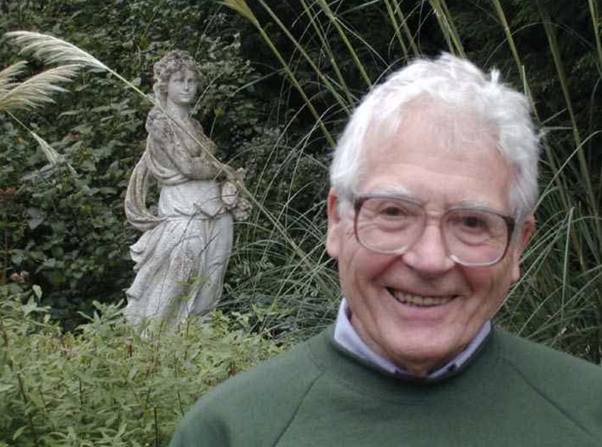
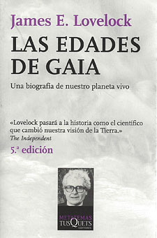
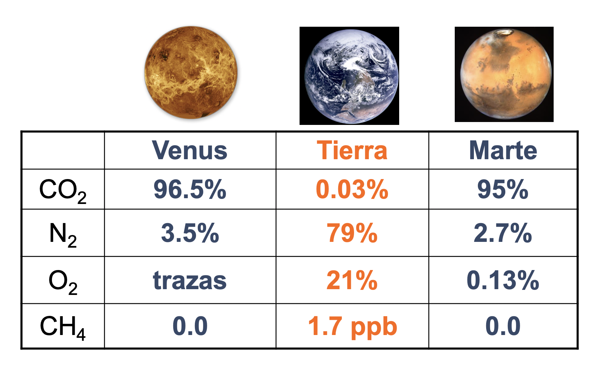
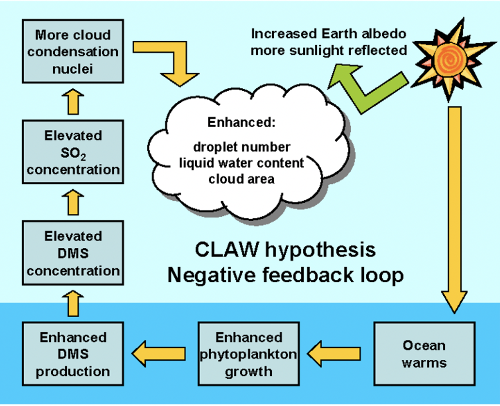
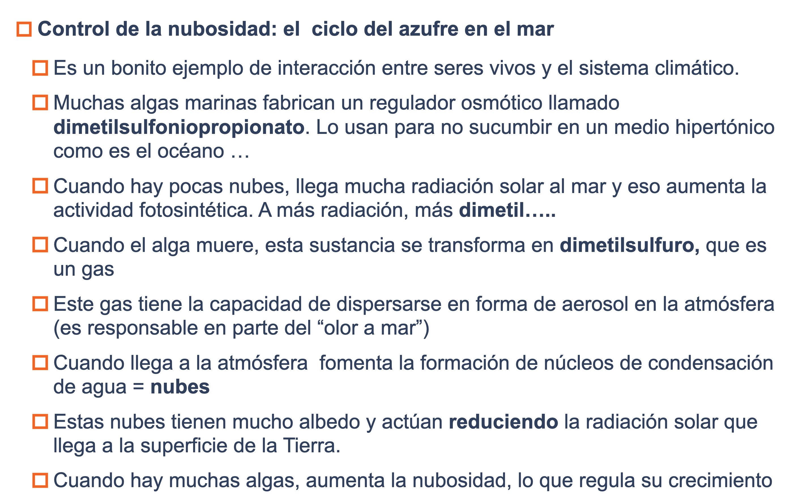
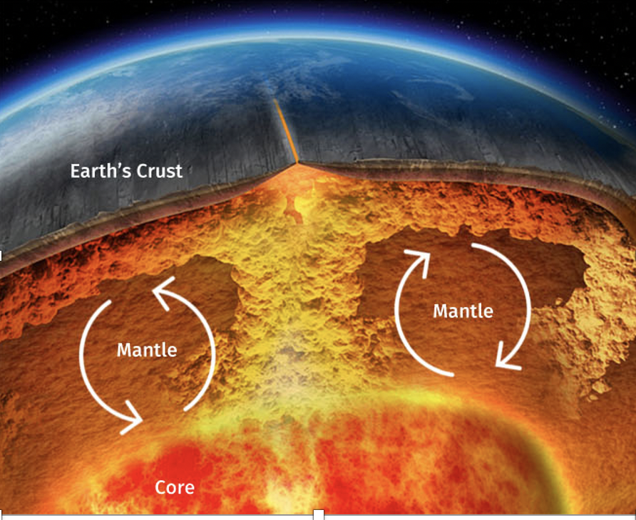

- Ciclos biogeoquímicos
- Definiciones
- Resultan de escalar a todo el planeta los procesos biológicos relacionados con el reciclaje de materia y las transferencias de energía.
- producción primaria
- Producción secundaria
- Descomposición
- Definición formal: Conjunto de procesos a través de los cuales un elemento o compuesto se mueve a través de los seres vivos y a través de las formas no vivas del planeta.
- Elementos que conforman los ciclos
- Formas químicas
- Los distintos elementos pueden tener distintas formas químicas en distintas partes del ciclo.
- Carbono
- CO2
- CH4
- glucosa, madera, huesos, etc.
- De lo anterior se deriva que el "movimiento" de un elemento de un sitio a otro requiere que haya:
- Compartimientos: "lugares" del planeta donde se acumula el elemento durante un corto periodo de tiempo. Ej., hojarasca
- Reservorios: "lugares" en los que se acumula el elemento durante mucho tiempo. Ej., carbón, petróleo. O sea, los ciclos no son tan cíclicos. O al menos no a "corto" plazo
- Flujos: tasa de transferencia (anual) del elemento entre compartimientos-repositorios. Los flujos se producen como consecuencia de la actividad de ciertos procesos (bióticos o abióticos). Ej. fotosíntesis
- Sumideros: Reservorios o compartimentos que actúan acumulando el elemento en cuestión. Es decir, tienen un balance neto positivo hacia ellos.
- Ejemplo. Ciclo del calcio en un bosque
- El ciclo del carbono
- Representa la forma en la que se transfiere la energía del Sol a los seres vivos. De la fusión del hidrógeno al ciclo de Krebs...
- Compartimentos
- Rocas de la corteza terrestre
- Océanos
- Combustibles fósiles
- Suelos y materia orgánica muerta
- Atmósfera
- Biosfera
- Foto fija (1Gt = 10^9 Tm)
- El papel de la Humanidad en el ciclo del carbono
- La quema de combustibles fósiles provoca un acúmulo de CO2 en la atmósfera y eso modifica el clima.
- Y también "contraviene" la tendencia que (creemos) ocurre en la Tierra desde hace mil millones de años (o más)
- El sol se hace cada vez más caliente (a escala de eones)
- Los seres vivos han ido retirando carbono de la atmósfera desde la "invención" de la fotosíntesis.
-
- Algas unicelulares (cocolitoforales)
- Emiliana huxleyi
-
- Este mecanismo es un ejemplo de homeostasis a escala planetaria.
- La vida ha ido retirando carbono de la atmósfera y almacenándolo en roca caliza y yacimientos de combustibles fósiles.
- Esto ha compensado el aumento de luminosidad del sol
- y ha mantenido "constante" la temperatura del planeta
- Paréntesis: La teoría de Gaia como elemento que nos ayuda a entender el concepto de reservorio y de homeostasis a escala global
- Esta teoría postula que la vida genera las condiciones para su existencia, también a escala planetaria.
- Formulada por un químico poco ortodoxo llamado James Lovelock en 1970.
- 
- 
- Fue contratado por la NASA para diseñar sensores que pudieran encontrar vida en Marte.
- Se preguntó si habría forma de identificar la vida marciana sin necesidad de ir allí.
- Comparó la composición química de los tres planetas más parecidos del Sistema Solar.
- 
- La de la Tierra es la única atmósfera que no está en equilibrio químico.
- Es el funcionamiento acoplado entre productores y consumidores lo que mantiene este desequilibrio.
- En el desequilibrio hay un patrón: cada vez menos gases de invernadero en la atmósfera.
- Este patrón responde a un proceso homeostático que permite mantener más o menos constante la temperatura del planeta.
- La hipótesis Gaia postula que el hecho de que haya vida en la Tierra ha generado mecanismos de homeostasis que permiten el mantenimiento de la propia vida. Se trata de procesos emergentes que no hay en otros planetas sin vida.
- La composición de nuestra atmósfera no es una "carambola cósmica", sino que es la consecuencia de la existencia de vida.
- Los ciclos biogeoquímicos planetarios son los mecanismos mediante los cuales Gaia "ejerce" la homeostasis global.
- Ejemplos
- Composición química de la atmósfera -> temperatura planetaria
- Salinidad en los océanos
-
- 
- 
-
- 
- El ciclo del nitrógeno
- Si el ciclo del carbono muestra cómo se "mueve" la energía del sol entre los seres vivos, el del nitrógeno está relacionado con elementos estructurales (proteínas y ácidos nucleicos)
- La atmósfera es el principal compartimento de este elemento (N2)
- Es escaso en las rocas y minerales.
- Y al mismo tiempo es vital para la biosfera
-
-
-
- Deposición de nitrógeno
- Eutrofización
-
-
- La vida "ha inventado" formas de resolver esto
- Seres que fijan nitrógeno: N2 -> NH3 -> plantas y animales
- Seres que devuelven el N2 a la atmósfera: NH3 - > N2